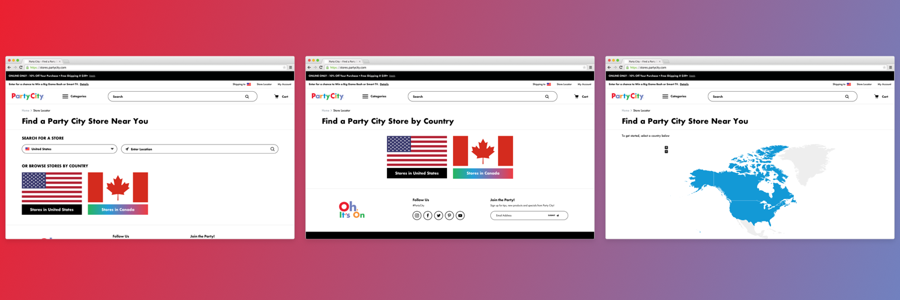
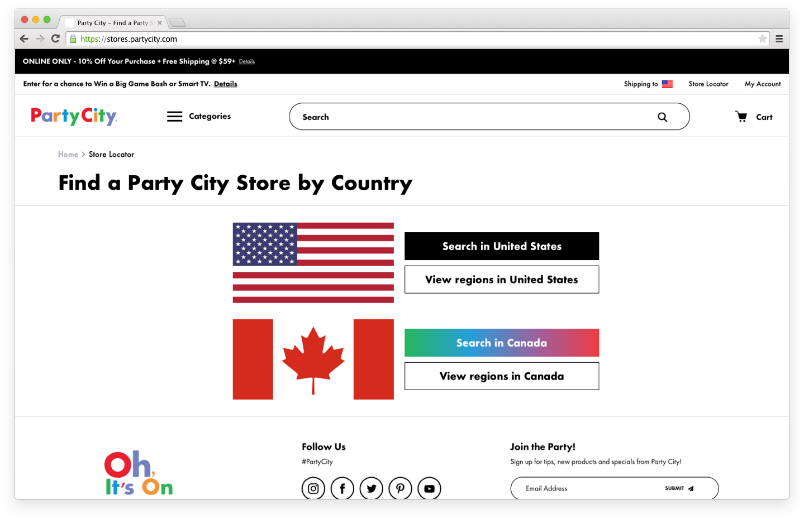

International Landing
Client Project
Role UI Design, Front-End Development
Team Rachel (Account Director), Alexa (QA), Jim (Deployment)
Client Party City
Timeline 4 weeks
User Experience Designer
Client Project
Role UI Design, Front-End Development
Team Rachel (Account Director), Alexa (QA), Jim (Deployment)
Client Party City
Timeline 4 weeks
International entry point to locator was not optimized to be action focused. The map appeared disabled and the CTAs were burried under the fold.
The prior version of the international landing page included a grayed out map followed by links to enter the US or Canada version of the locator. Party City wasn't seeing much traction on this page and wanted us to find a more engaging way to draw the user into the two locator sites.
Below are the 3 concepts provided to the client. I recommended Concept 1

With Concept 1, the user would be able to search for a store upon initial entrance into the locator or browse by country.
Country search dropdown
The default value would be based on the user's location. This will help limit the autocomplete results to be within the selected country and help direct the user to the appropriate search page.
Browse buttons
Currently, we're labelling the US and CA flag links as "Browse Stores by coutry" but then directing them to a geolocated search page, not a browse path. In the updated version, these links will take the user to the geolocated page, but will scroll to the list of available states. An alternative is to change the 'browse' title to something more closely resembling the action the user will actually be taking.
Button styles
We would utilize the client's native button styling which would include the gradient hover, shown on the "Stores in Canada" button.
After meetings with the client we determined the best course of action for their timeline was to go with a modified version of Concept 2. This concept doesn't require as much development effort and allows the user to choose whether they want to start with a search or the browse path. Below is the modified version which includes both link options per country.
